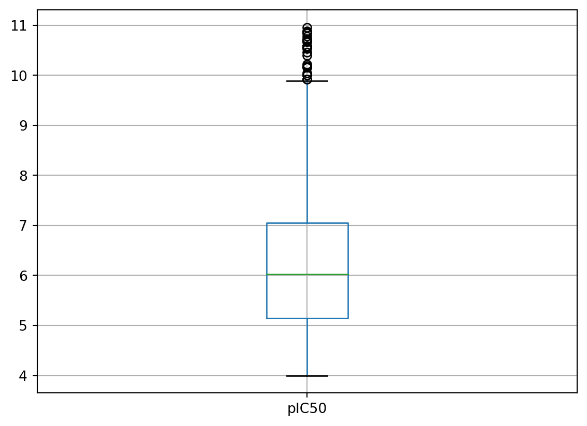

# Import all libraries used
import pandas as pd
import math
import datamol as dmSince data preparation and cleaning was a well-known process that would take up a lot of time, I’ve decided to split this part into two posts to ensure the reading time for each post was reasonable.
Re-import saved dataframe
Re-imported the partly pre-processed dtree_df from the earlier post.
dtree_df = pd.read_csv("ache_chembl.csv")
dtree_df.head()| Unnamed: 0 | molecule_chembl_id | IC50 | units | data_validity_comment | smiles | |
|---|---|---|---|---|---|---|
| 0 | 0 | CHEMBL133897 | 750.0 | nM | NaN | CCOc1nn(-c2cccc(OCc3ccccc3)c2)c(=O)o1 |
| 1 | 1 | CHEMBL336398 | 100.0 | nM | NaN | O=C(N1CCCCC1)n1nc(-c2ccc(Cl)cc2)nc1SCC1CC1 |
| 2 | 2 | CHEMBL130628 | 300.0 | nM | NaN | O=C(N1CCCCC1)n1nc(-c2ccc(Cl)cc2)nc1SCC(F)(F)F |
| 3 | 3 | CHEMBL130478 | 800.0 | nM | NaN | CSc1nc(-c2ccc(OC(F)(F)F)cc2)nn1C(=O)N(C)C |
| 4 | 4 | CHEMBL130112 | 2400.0 | nM | NaN | CSc1nc(-c2ccc(C)cc2)nn1C(=O)N(C)c1ccccc1 |
Noticed there was an extra index column, likely inherited from how the .csv file was saved, which was subsequently removed.
dtree_df = dtree_df.drop("Unnamed: 0", axis = 1)
dtree_df.head()| molecule_chembl_id | IC50 | units | data_validity_comment | smiles | |
|---|---|---|---|---|---|
| 0 | CHEMBL133897 | 750.0 | nM | NaN | CCOc1nn(-c2cccc(OCc3ccccc3)c2)c(=O)o1 |
| 1 | CHEMBL336398 | 100.0 | nM | NaN | O=C(N1CCCCC1)n1nc(-c2ccc(Cl)cc2)nc1SCC1CC1 |
| 2 | CHEMBL130628 | 300.0 | nM | NaN | O=C(N1CCCCC1)n1nc(-c2ccc(Cl)cc2)nc1SCC(F)(F)F |
| 3 | CHEMBL130478 | 800.0 | nM | NaN | CSc1nc(-c2ccc(OC(F)(F)F)cc2)nn1C(=O)N(C)C |
| 4 | CHEMBL130112 | 2400.0 | nM | NaN | CSc1nc(-c2ccc(C)cc2)nn1C(=O)N(C)c1ccccc1 |
The merged dataframe was found to have IC50 with zero nM, which meant the function to convert IC50 to pIC50 would not proceed (due to natural log of zero normally means undefined answer!). So a good practice to clean data like this was probably best to run a statistical summary such as the code below first, then look for minimum and maximum values and also others to see if there were anything to be tidied up first.
dtree_df.describe()| IC50 | |
|---|---|
| count | 5.040000e+03 |
| mean | 8.070638e+04 |
| std | 9.511451e+05 |
| min | 0.000000e+00 |
| 25% | 1.000000e+02 |
| 50% | 1.200000e+03 |
| 75% | 9.700000e+03 |
| max | 4.960000e+07 |
Limiting the IC50 values to be above zero only.
# Select IC50 values above zero
dtree_df = dtree_df[dtree_df["IC50"] > 0.0]Re-checked the minimum value of IC50 column, which should be above zero.
dtree_df["IC50"].min()5e-06Now we could convert the IC50 values to pIC50 values (the negative log of IC50 in molar units).
The key to understand pIC50 here was to treat pIC50 similarly to how we understand pH for our acids and bases. pIC50 was a dimensionless value (so no units actually!) - useful link. The formula to convert IC50 to pIC50 for nM units was (use LaTex for formula):
pIC50 = 9 - log10(IC50)
Set up a small function to do the conversion.
def calc_pIC50(IC50):
pIC50_value = 9 - math.log10(IC50)
return pIC50_valueApplying the calc_pIC50 function to convert all rows of the compound dataset for the IC50 column.
# Create a new column for pIC50
# Apply calc_pIC50 function to the data in IC50 column
dtree_df["pIC50"] = dtree_df.apply(lambda x: calc_pIC50(x.IC50), axis = 1)The dataframe would now look like this, with a new pIC50 column ready for use.
dtree_df.head()| molecule_chembl_id | IC50 | units | data_validity_comment | smiles | pIC50 | |
|---|---|---|---|---|---|---|
| 0 | CHEMBL133897 | 750.0 | nM | NaN | CCOc1nn(-c2cccc(OCc3ccccc3)c2)c(=O)o1 | 6.124939 |
| 1 | CHEMBL336398 | 100.0 | nM | NaN | O=C(N1CCCCC1)n1nc(-c2ccc(Cl)cc2)nc1SCC1CC1 | 7.000000 |
| 2 | CHEMBL130628 | 300.0 | nM | NaN | O=C(N1CCCCC1)n1nc(-c2ccc(Cl)cc2)nc1SCC(F)(F)F | 6.522879 |
| 3 | CHEMBL130478 | 800.0 | nM | NaN | CSc1nc(-c2ccc(OC(F)(F)F)cc2)nn1C(=O)N(C)C | 6.096910 |
| 4 | CHEMBL130112 | 2400.0 | nM | NaN | CSc1nc(-c2ccc(C)cc2)nn1C(=O)N(C)c1ccccc1 | 5.619789 |
However, for a decision tree model, a few more molecular descriptors were probably needed rather than only IC50 or pIC50 and SMILES… One way to do this could be through computations based on canonical SMILES of compounds by using RDKit to add some molecular descriptors.
Before doing this, a compound sanitisation step would probably be the best before starting any calculations, as this might rule out some compounds with questionable chemical validities. This could also be done via RDKit or I guess Datamol (a Python wrapper library built based on RDKit) might also help as well.
I thought to convert the data types of the “smiles” and “data_validity_comment” columns to string first (in case of running into problems later).
#df['column'].astype('string')
dtree_df = dtree_df.astype({"smiles": "string", "data_validity_comment": "string"})
dtree_df.dtypesmolecule_chembl_id object
IC50 float64
units object
data_validity_comment string
smiles string
pIC50 float64
dtype: objectAlso, before I jumped straight to compound sanitisation, I thought I should check out if there were any comments in the “data_validity_comment” column.
dtree_df["data_validity_comment"].unique()<StringArray>
[<NA>, 'Outside typical range', 'Potential transcription error']
Length: 3, dtype: stringInterestingly, there were 3 different types of data validity comments found, which were “NaN”, “Outside typical range” and “Potential transcirption error”. So, this meant we would need to address compounds with comments in the latter two.
# Find out number of compounds with "outside typical range" as data validity comment
dtree_df[dtree_df["data_validity_comment"] == "Outside typical range"]| molecule_chembl_id | IC50 | units | data_validity_comment | smiles | pIC50 | |
|---|---|---|---|---|---|---|
| 19 | CHEMBL46151 | 260000.0 | nM | Outside typical range | CCN(CC)CCS/C(=N\O)C(=O)c1ccc(OC)cc1 | 3.585027 |
| 25 | CHEMBL544022 | 520000.0 | nM | Outside typical range | CCN(CC)CCS/C(=N\O)C(=O)c1ccc(Cl)cc1.Cl | 3.283997 |
| 38 | CHEMBL33051 | 460000.0 | nM | Outside typical range | NC(=O)c1cc[n+](COC[n+]2ccccc2/C=N/O)cc1.[Cl-].... | 3.337242 |
| 41 | CHEMBL543546 | 330000.0 | nM | Outside typical range | CC(C)N(CCS/C(=N\O)C(=O)c1ccc(Cl)cc1)C(C)C.Cl | 3.481486 |
| 42 | CHEMBL1420 | 340000.0 | nM | Outside typical range | C[n+]1ccccc1C=NO | 3.468521 |
| ... | ... | ... | ... | ... | ... | ... |
| 4947 | CHEMBL5190179 | 785000.0 | nM | Outside typical range | OCCCCCCCCc1ccc(CN2CCCCCC2)c(O)c1 | 3.105130 |
| 4995 | CHEMBL1668934 | 115000.0 | nM | Outside typical range | CC(=O)N1CCC(NC(=O)Nc2ccc(OC(F)(F)F)cc2)CC1 | 3.939302 |
| 5025 | CHEMBL5219232 | 1000000.0 | nM | Outside typical range | C#CCN[C@@H]1CCc2ccc(OC(=O)N(C)CC)cc21.C#CCN[C@... | 3.000000 |
| 5027 | CHEMBL1193656 | 150000.0 | nM | Outside typical range | C#CCNC1CCc2c(OC(=O)N(C)CC)cccc21 | 3.823909 |
| 5029 | CHEMBL1193856 | 730000.0 | nM | Outside typical range | C#CCN(C)C1CCc2cccc(OC(=O)N(C)C)c21 | 3.136677 |
328 rows × 6 columns
There were a total of 328 compounds with IC50 outside typical range!
# Find out number of compounds with "potential transcription error" as data validity comment
dtree_df[dtree_df["data_validity_comment"] == "Potential transcription error"]| molecule_chembl_id | IC50 | units | data_validity_comment | smiles | pIC50 | |
|---|---|---|---|---|---|---|
| 753 | CHEMBL189957 | 320.0 | nM | Potential transcription error | CNC(=O)Oc1cccc(CN(C)CCCCCCCOc2ccc3c(=O)c4ccccc... | 6.494850 |
| 755 | CHEMBL190060 | 6860.0 | nM | Potential transcription error | CNC(=O)Oc1cccc(CN(C)CCCOc2ccc3c(c2)O/C(=C\c2cc... | 5.163676 |
| 756 | CHEMBL191386 | 3410.0 | nM | Potential transcription error | CNC(=O)Oc1cccc(CN(C)CCCOc2ccc3c(c2)O/C(=C\c2cc... | 5.467246 |
| 761 | CHEMBL370961 | 1950.0 | nM | Potential transcription error | CNC(=O)Oc1cccc(CN(C)CCCCCCCOc2ccc3c(c2)O/C(=C\... | 5.709965 |
| 762 | CHEMBL372710 | 8000.0 | nM | Potential transcription error | CNC(=O)Oc1cccc(CN(C)CCCCCCCOc2ccc3c(c2)O/C(=C\... | 5.096910 |
| 763 | CHEMBL364678 | 44600.0 | nM | Potential transcription error | CNC(=O)Oc1cccc(CN(C)CCCCCCCOc2ccc3c(c2)O/C(=C\... | 4.350665 |
| 764 | CHEMBL191461 | 1800.0 | nM | Potential transcription error | CNC(=O)Oc1cccc(CN(C)CCCCCCCOc2ccc3c(c2)C/C(=C\... | 5.744727 |
| 1030 | CHEMBL239046 | 7160.0 | nM | Potential transcription error | CCN(Cc1ccccc1)Cc1ccc(-c2cc3cc(OCCNC(=O)/C=C/c4... | 5.145087 |
There were 8 compounds with potential transcription errors for their respective IC50 values!
This meant it would be best to remove above compounds with questionable IC50 values (could be potential sources of errors for ML models later on). One of the ways I thought of doing was to fill the empty cells under “data_validity_comment” column, so this would be easier to filter.
# Fill "NaN" entries with an actual name e.g. zero
dtree_df = dtree_df.fillna("zero")
dtree_df.head(10)| molecule_chembl_id | IC50 | units | data_validity_comment | smiles | pIC50 | |
|---|---|---|---|---|---|---|
| 0 | CHEMBL133897 | 750.0 | nM | zero | CCOc1nn(-c2cccc(OCc3ccccc3)c2)c(=O)o1 | 6.124939 |
| 1 | CHEMBL336398 | 100.0 | nM | zero | O=C(N1CCCCC1)n1nc(-c2ccc(Cl)cc2)nc1SCC1CC1 | 7.000000 |
| 2 | CHEMBL130628 | 300.0 | nM | zero | O=C(N1CCCCC1)n1nc(-c2ccc(Cl)cc2)nc1SCC(F)(F)F | 6.522879 |
| 3 | CHEMBL130478 | 800.0 | nM | zero | CSc1nc(-c2ccc(OC(F)(F)F)cc2)nn1C(=O)N(C)C | 6.096910 |
| 4 | CHEMBL130112 | 2400.0 | nM | zero | CSc1nc(-c2ccc(C)cc2)nn1C(=O)N(C)c1ccccc1 | 5.619789 |
| 5 | CHEMBL130098 | 100.0 | nM | zero | CSc1nc(-c2ccc(Cl)cc2)nn1C(=O)N(C)C | 7.000000 |
| 6 | CHEMBL336538 | 800.0 | nM | zero | COc1ccc(-c2nc(SC)n(C(=O)N(C)C)n2)cc1 | 6.096910 |
| 7 | CHEMBL335033 | 50.0 | nM | zero | CSc1nc(-c2ccc3ccccc3c2)nn1C(=O)N(C)C | 7.301030 |
| 8 | CHEMBL338720 | 560.0 | nM | zero | CSc1nc(-c2ccc(-c3ccccc3)cc2)nn1C(=O)N(C)C | 6.251812 |
| 9 | CHEMBL131536 | 1400.0 | nM | zero | CSc1nc(-c2ccc(Cl)cc2)nn1C(=O)N(C)c1ccccc1 | 5.853872 |
Filtered out only the compounds with nil data validity comments.
#dtree_df["data_validity_comment"].unique()
dtree_df = dtree_df[dtree_df["data_validity_comment"] == "zero"]Checking the dtree_df dataframe again and also whether if only the compounds with “zero” labelled for “data_validity_comment” column were kept (and other two types were removed).
print(dtree_df.shape)
dtree_df["data_validity_comment"].unique()(4703, 6)<StringArray>
['zero']
Length: 1, dtype: stringCompound sanitisation
I’ve found the pre-processing molecules tutorial and its reference links provided by Datamol at the bottom of the webpage to be very informative. Each steps of fix_mol(), sanitize_mol() and standardize_mol() were explained to a certain degree in the link provided above. I guess the key was to select pre-processing options required to fit the purpose of the ML models being built later on, and more experiences in doing this would also help to improve the compound pre-processing step.
# _preprocess function to sanitise compounds - adapted from datamol.io
smiles_column = "smiles"
dm.disable_rdkit_log()
def _preprocess(row):
# Convert each compound to a RDKit molecule in the smiles column
mol = dm.to_mol(row[smiles_column], ordered=True)
# Fix common errors in the molecules
mol = dm.fix_mol(mol)
# Sanitise the molecules
mol = dm.sanitize_mol(mol, sanifix=True, charge_neutral=False)
# Standardise the molecules
mol = dm.standardize_mol(
mol,
disconnect_metals=False,
normalize=True,
reionize=True,
# Decided to switch on "uncharge" to neutralise charges - the only change
uncharge=True,
stereo=True,
)
# Added a new column below for RDKit molecules
row["rdkit_mol"] = dm.to_mol(mol)
row["standard_smiles"] = dm.standardize_smiles(dm.to_smiles(mol))
row["selfies"] = dm.to_selfies(mol)
row["inchi"] = dm.to_inchi(mol)
row["inchikey"] = dm.to_inchikey(mol)
return rowThen the compound sanitisation function was applied to the dtree_df.
dtree_san_df = dtree_df.apply(_preprocess, axis = 1)
dtree_san_df.head()| molecule_chembl_id | IC50 | units | data_validity_comment | smiles | pIC50 | rdkit_mol | standard_smiles | selfies | inchi | inchikey | |
|---|---|---|---|---|---|---|---|---|---|---|---|
| 0 | CHEMBL133897 | 750.0 | nM | zero | CCOc1nn(-c2cccc(OCc3ccccc3)c2)c(=O)o1 | 6.124939 | <rdkit.Chem.rdchem.Mol object at 0x123eab5a0> | CCOc1nn(-c2cccc(OCc3ccccc3)c2)c(=O)o1 | [C][C][O][C][=N][N][Branch2][Ring1][Branch1][C... | InChI=1S/C17H16N2O4/c1-2-21-16-18-19(17(20)23-... | GUZKBNUSIOHJIR-UHFFFAOYSA-N |
| 1 | CHEMBL336398 | 100.0 | nM | zero | O=C(N1CCCCC1)n1nc(-c2ccc(Cl)cc2)nc1SCC1CC1 | 7.000000 | <rdkit.Chem.rdchem.Mol object at 0x123eab450> | O=C(N1CCCCC1)n1nc(-c2ccc(Cl)cc2)nc1SCC1CC1 | [O][=C][Branch1][=Branch2][N][C][C][C][C][C][R... | InChI=1S/C18H21ClN4OS/c19-15-8-6-14(7-9-15)16-... | XWIIHZHUZCWNLW-UHFFFAOYSA-N |
| 2 | CHEMBL130628 | 300.0 | nM | zero | O=C(N1CCCCC1)n1nc(-c2ccc(Cl)cc2)nc1SCC(F)(F)F | 6.522879 | <rdkit.Chem.rdchem.Mol object at 0x123eab4c0> | O=C(N1CCCCC1)n1nc(-c2ccc(Cl)cc2)nc1SCC(F)(F)F | [O][=C][Branch1][=Branch2][N][C][C][C][C][C][R... | InChI=1S/C16H16ClF3N4OS/c17-12-6-4-11(5-7-12)1... | GTBUYLWBDILEPY-UHFFFAOYSA-N |
| 3 | CHEMBL130478 | 800.0 | nM | zero | CSc1nc(-c2ccc(OC(F)(F)F)cc2)nn1C(=O)N(C)C | 6.096910 | <rdkit.Chem.rdchem.Mol object at 0x123eaae30> | CSc1nc(-c2ccc(OC(F)(F)F)cc2)nn1C(=O)N(C)C | [C][S][C][=N][C][Branch2][Ring1][Ring2][C][=C]... | InChI=1S/C13H13F3N4O2S/c1-19(2)12(21)20-11(23-... | FBOHEFQKBNWFPO-UHFFFAOYSA-N |
| 4 | CHEMBL130112 | 2400.0 | nM | zero | CSc1nc(-c2ccc(C)cc2)nn1C(=O)N(C)c1ccccc1 | 5.619789 | <rdkit.Chem.rdchem.Mol object at 0x123eaaea0> | CSc1nc(-c2ccc(C)cc2)nn1C(=O)N(C)c1ccccc1 | [C][S][C][=N][C][Branch1][N][C][=C][C][=C][Bra... | InChI=1S/C18H18N4OS/c1-13-9-11-14(12-10-13)16-... | AAXQEELWFXEVAH-UHFFFAOYSA-N |
Please note if the dataset required for sanitisation is large, Datamol has suggested using their example code to add parallelisation as shown below.
```{python}
# Code adapted from: https://docs.datamol.io/stable/tutorials/Preprocessing.html#references
data_clean = dm.parallelized(
_preprocess,
data.iterrows(),
arg_type="args",
progress=True,
total=len(data)
)
data_clean = pd.DataFrame(data_clean)
```dtree_san_df.shape(4703, 11)In this case, I tried using the preprocessing function without adding the parallelisation, the whole sanitisation process wasn’t overly long, and was done within a minute or so (the dtree_df dataframe had 4,703 rows or compounds only).
Detect outliers
Plotting a histogram to see the distribution of pIC50 values first.
dtree_san_df.hist(column = "pIC50")array([[<AxesSubplot: title={'center': 'pIC50'}>]], dtype=object)
I read a bit about Dixon’s Q test and realised that there were a few required assumptions prior to using this test, and the current dataset being used here (dtree_san_df) might not fit the requirements, which were:
- normally distributed data
- a small sample size e.g. between 3 and 10 (as originally stated in the paper published by R. B. Dean and W. J. Dixon (1951) Simplified Statistics for Small Numbers of Observations”. Anal. Chem., 1951, 23 (4), 636–638).
So I’ve decided that rather than showing Python code for Dixon’s Q test myself, I’d attach a few examples from others instead, Q test from Plotly and also Dixon’s Q test for outlier identification – a questionable practice, since this dataset here wasn’t quite normally distributed as shown from the histogram plotted above.
dtree_san_df.boxplot(column = "pIC50")
# the boxplot version below shows a blank background
# rather than above version with horizontal grid lines
#dtree_san_df.plot.box(column = "pIC50")<AxesSubplot: >
So I used Pandas’ built-in boxplot in addition to the histogram to show the likely outliers within the pIC50 values. Clearly, the possible outliers for pIC50 values appeared to be close to 10 and above. I’ve then decided not to completely remove these outliers due to the dataset itself being not in a Gaussian distribution (which meant they might not be true outliers).